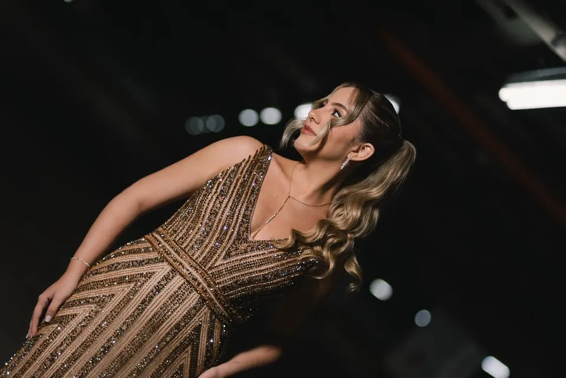

GustavoRibeiro
Conto histórias reais em imagens que emocionam e ficam para sempre: ensaios, casamentos e eventos, com um olhar sensível e técnico.
Sobre Gustavo Ribeiro
Cada trabalho é único. Meu compromisso vai além de fotografar: quero contar histórias reais através de imagens que emocionam e ficam para sempre.
Sou fotógrafo há mais de 9 anos, especializado em ensaios, casamentos e eventos. Construí um olhar sensível e técnico para registrar momentos com autenticidade, emoção e beleza. Ofereço um atendimento personalizado, buscando entender o estilo, os desejos e a essência de cada cliente, com equipamentos de alta qualidade e um processo leve e profissional.
- 9+anos de estrada
- 3frentes: ensaios, casamentos e eventos
- 48hprévia das fotos (pacote Eternize)
- até 30 diaspara a entrega completa
O que eu fotografo
Do detalhe mais sutil de um ensaio à alegria de um grande evento.
-
Ver mais
Ensaios
Pré wedding e retratos, com direção leve para você se sentir à vontade. No pré wedding, a entrega mínima é de até 100 fotos.
-
Ver mais
Casamentos
Making off, cerimônia religiosa, fotos protocolares com a família e a recepção, com um ou dois fotógrafos e assistente.
-
Ver mais
Eventos
Festas e eventos de todos os tamanhos, com cobertura por hora e proposta personalizada.
Projetos
em destaque
Escolha um projeto para abrir o álbum de casamentos, ensaios ou retratos.
-
32 fotos
Casamento
Casamentos
Cerimônia, família e festa.
Ver álbum -
16 fotos
Casamento
Casamento civil
Cartório, capela e a intimidade de dizer sim.
Ver álbum -
9 fotos
Ensaio
Pré-wedding
Ensaio do casal antes do grande dia.
Ver álbum -
8 fotos
Ensaio
Gestante
A espera do bebê, em família.
Ver álbum -
7 fotos

Retrato autoral
Retratos
Retratos e ensaios pessoais.
Ver álbum
Como funciona
o seu casamento
Cinco etapas, da primeira conversa às fotos nas suas mãos. Arraste ou use os pontos para navegar.
- 1
Conversa
Você preenche o formulário, o WhatsApp abre com o seu pedido e a gente conversa sobre o estilo, os desejos e a essência do seu dia.
- 2
Proposta
Você escolhe entre Essencial e Eternize, ou monto uma proposta personalizada. Ela vale por 30 dias.
- 3
Contrato e data
A data só entra na minha agenda mediante a assinatura do contrato. O pagamento pode ser à vista via PIX ou em até 12x em boletos.
- 4
O grande dia
Cubro o que você contratou, do ensaio à festa, com atendimento leve e profissional.
- 5
Entrega
Prévia em 48h no pacote Eternize. O link com as fotos em altíssima resolução chega em até 20 dias (Essencial) ou 30 dias (Eternize), com as fotos reveladas.
Propostas de casamento 2026/2027
Dois formatos pensados para o seu dia. Escolha um e o pedido segue pronto para o WhatsApp, onde a gente acerta os detalhes.
-
Essencial
- Ensaio pré weddingEntrega mínima de até 100 fotos
- Cobertura da cerimônia religiosaPós-cerimônia: ensaio com casal e padrinhos e fotos protocolares com os familiares
- Cobertura da recepção e festaFotos protocolares com os familiares e festa, com limite de até 3 horas de atendimento
- Atendimento1 fotógrafo e assistente
Entrega digitalLink com os arquivos digitais em altíssima resolução + box com 10 fotos reveladas 10x15 (prazo de entrega de até 20 dias)R$ 3.100,00
-
Eternize
- Ensaio pré weddingEntrega mínima de até 100 fotos
- Making off da noiva e do noivo
- Cobertura da cerimônia religiosa com dois fotógrafosPós-cerimônia: ensaio com casal e padrinhos e fotos protocolares com os familiares
- Cobertura da recepção e festaFesta com limite de até 4 horas de atendimento
- Atendimento2 fotógrafos e assistente
Entrega digital e impressaPrévia em 48h, link com os arquivos digitais em altíssima resolução + box com 20 fotos reveladas 10x15 e pendrive (prazo de até 30 dias)R$ 4.500,00
Compare os pacotes
| Item | Essencial | Eternize |
|---|---|---|
| Ensaio pré wedding | Até 100 fotos | Até 100 fotos |
| Making off da noiva e do noivo | Serviço separado | Incluso |
| Cerimônia religiosa | 1 fotógrafo e assistente | 2 fotógrafos e assistente |
| Pós-cerimônia (casal, padrinhos e família) | Incluso | Incluso |
| Recepção e festa | Até 3 horas | Até 4 horas |
| Prévia das fotos | Não inclui | Em 48h |
| Fotos reveladas 10x15 | Box com 10 | Box com 20 |
| Pendrive | Não inclui | Incluso |
| Prazo de entrega | Até 20 dias | Até 30 dias |
| Valor | R$ 3.100,00 | R$ 4.500,00 |
Serviços separados
- Casamento civilR$ 400,00
- Making off da noivaR$ 400,00
- Making off do noivoR$ 300,00
- Hora adicional de festaR$ 150,00
Formas de pagamento
À vista via PIX ou em 12x em boletos mensais até a data do evento.
Outras formas de pagamento sob consulta.
Proposta válida por 30 dias. O fechamento da data na agenda acontece somente mediante a assinatura do contrato.
Perguntas frequentes
Ainda com dúvida? Chame no WhatsApp.
Como funciona o orçamento?
Você escolhe o tipo de sessão, a proposta e a data no formulário. O WhatsApp abre com o seu pedido pronto e a gente termina a negociação por lá, sem compromisso.
Qual a diferença entre o Essencial e o Eternize?
O Essencial (R$ 3.100,00) tem 1 fotógrafo e assistente, festa de até 3 horas e box com 10 fotos reveladas. O Eternize (R$ 4.500,00) inclui making off da noiva e do noivo, 2 fotógrafos e assistente na cerimônia, festa de até 4 horas, prévia em 48h, box com 20 fotos reveladas e pendrive. Os dois trazem o ensaio pré wedding com entrega mínima de até 100 fotos.
Como e quando recebo as fotos?
Por um link com os arquivos digitais em altíssima resolução, mais o box de fotos reveladas 10x15. O prazo é de até 20 dias no Essencial e de até 30 dias no Eternize, que ainda traz uma prévia em 48h.
Como garanto a minha data?
O fechamento da data na agenda acontece somente mediante a assinatura do contrato. A proposta é válida por 30 dias.
Quais são as formas de pagamento?
À vista via PIX ou em até 12x em boletos mensais até a data do evento. Outras formas de pagamento sob consulta.
Posso contratar só uma parte do serviço?
Sim. Há serviços separados: casamento civil (R$ 400,00), making off da noiva (R$ 400,00), making off do noivo (R$ 300,00) e hora adicional de festa (R$ 150,00).
Você fotografa outros tipos de evento?
Sim. Além de casamentos, faço ensaios e eventos. Escolha o tipo no formulário e eu preparo uma proposta personalizada.
Vamos contar
a sua história?
Peça a sua proposta agora. O WhatsApp abre com tudo preenchido e a gente combina os detalhes por lá.
Vamos conversar sobre o seu momento?
Conte o que você imagina: tipo de sessão, proposta e data. A negociação termina no WhatsApp, sem compromisso.